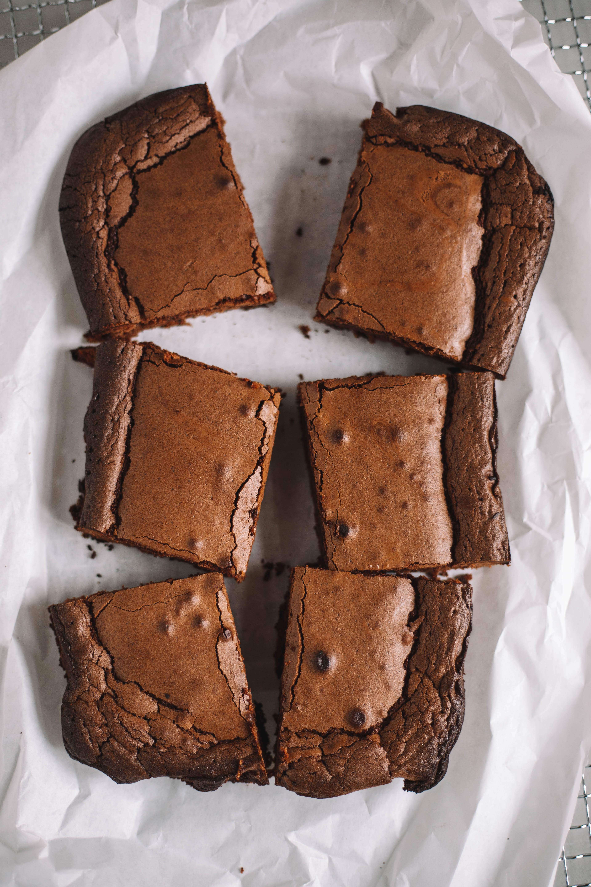

Tenerina

Description
Tenerina is my favorite dessert, one of the many Italian specialties and originally from the city of Ferrara. It is basically a chocolate cake, not fluffy at all but instead it is thin and thick and very chocolatey.
It is very good with a sprinkling of powdered sugar and with some whipped cream or a side of mascarpone cream.
Here I am about to disclose to you my own secret recipe, I hope you'll like it!
Ingredients (in random order)
- 4 medium-sized eggs
- 200 grams of dark chocolate
- 150 grams of butter (plus some for the baking tray)
- 180 grams of vanilla sugar
- 2 level tablespoons of flour (plus some for the baking tray)
- A tiny pinch of baking powder
Steps
- Put the butter and the chocolate in a saucepan and let them melt, after breaking them in large pieces to ease a uniform melting. Pay attention to not let the butter boil for any reason, it will ruin the whole cake. No idea why but I've learned it the hard way!
- Separate the egg yolks from the whites.
- Take the whites and whip it until they are stiff, then put aside.
- Take a bowl and stir the yolks with the sugar (a little elbow grease will be rewarded), then add flour and baking powder.
- Now you can add the buttery chocolate and, last but not least, the wipped whites, praying for them not to collapse completely.
- Put all in a big buttered and floured baking tray (about 26x33 cm) and bake for 24-25 minute at 180°C in static oven.
- Let it cool down and enjoy!